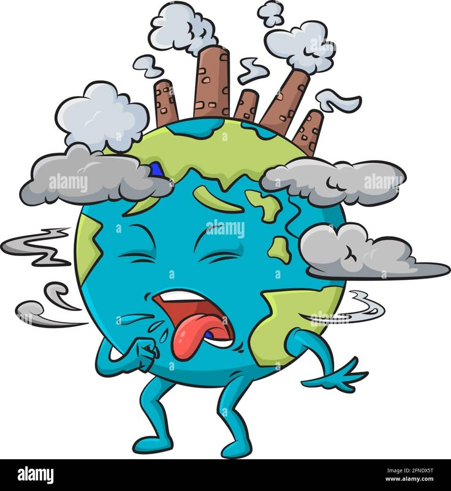

Contaminación del Aire
Causada por gases y partículas en suspensión. Ejemplos: emisiones de vehículos y fábricas.
La contaminación es un problema grave que afecta nuestro planeta. Debemos tomar acción para proteger nuestro medio ambiente.
Causada por gases y partículas en suspensión. Ejemplos: emisiones de vehículos y fábricas.
Provocada por desechos industriales y domésticos. Ejemplos: vertidos tóxicos en ríos y océanos.